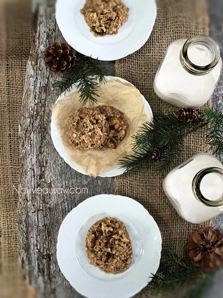
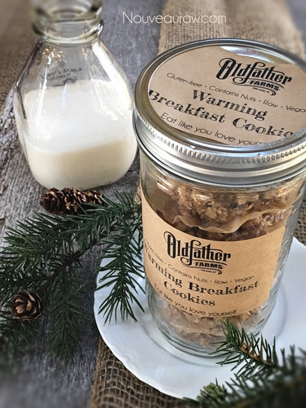

Warming Breakfast Oatmeal Cookies

raw / gluten-free / vegan
How does this sound for tomorrow’s breakfast… A giant healthy cookie dipped in raw Young Thai Coconut yogurt? Sounds a little naughty doesn’t it?
The base for these cookies is made from oats that are chocked full of fiber. What else is hiding inside these appropriate for breakfast cookies? Well, walnuts for starters and they contain the plant-based omega-3 fat alpha-linolenic acid (ALA), which is anti-inflammatory. There is also evidence that walnut consumption supports healthful cholesterol levels.
Ginger… just ONE of the great things about ginger is that it has a warming effect and stimulates circulation. We all need a little warmth on chilly mornings.
Psyllium has soluble fiber which can help lower cholesterol, relieve both constipation and diarrhea, and is used to treat irritable bowel syndrome, hemorrhoids, and other intestinal problems. Psyllium has also been used to help regulate blood sugar levels in people with diabetes.
I’m on a roll, don’t stop me now…
Coconut oil can boost thyroid function helping to increase metabolism, energy, and endurance. It also increases digestion and helps the absorption of fat-soluble vitamins. (2)
Ok, ok, just one more… cardamom is believed to possess anti-depressant properties. (3) So, this isn’t your typical cookie, now is it? While you might feel guilty eating a cookie for breakfast… but by the time you have polished off that last crumb, you have introduced some inflammation-fighting, a warming effect throughout the body, fiber to keep your bowels moving at a safe speed, a happy thyroid and lastly… a joyful heart! What a great way to start the day.
yields 22 (1/4 cup measurement) cookies
- 4 cups gluten-free, rolled oats, soaked
- 2 cups chopped raw walnuts, soaked
- 1/2 cup sweetened diced crystallized ginger
- 2 Tbsp psyllium husks
- 2 Tbsp cold-pressed coconut oil, melted
- 1/3 cup + 2 Tbsp maple syrup (grade B is ideal)
- 1 tsp maple extract
- 1 tsp Himalayan pink salt
- 1/2 tsp ground cardamom
- 1/4 tsp ground Ceylon cinnamon
- 1/4 tsp ground ginger or ginger juice
- 1/4 tsp freshly cracked black pepper
Preparation:
- Soak, drain, and rinse oats. You want to keep rinsing until the drain water is clear.
- In a large bowl mix together oats, walnuts, ginger, psyllium, coconut oil, sweeteners, maple extract, cardamom, ginger, cinnamon, pepper, and salt.
- Use your hands to mix this up… get everything well coated. Besides, it’s fun! Just be sure to remove your rings. I had to fish out one of mine.
- Using a 1/4 cup cookie scoop, place the cookies on non-stick sheets that come with the dehydrator.
- I did 9 per tray, leaving space in between them.
- Once a tray is full, pick it up by the bottom 2 corners. Lightly tap the tray on the countertop 2x, turn the tray, and do this on each edge. This will somewhat flatten the cookies, making them the perfect cookie shape.
- Dry at 145 degrees (F) for 1 hour, reduce to 115 degrees (F), and continue to dry for 8-10 hours or until the desired dryness/moisture is achieved.
- Halfway through, transfer the cookies to the mesh sheet to speed up the dry time.
- Dry times will always vary depending on the climate, humidity, model of the machine, and how full it is.
- All to cool, then store in an airtight container. This will freeze well too!

The Institute of Culinary Ingredients:
- To learn more about maple syrup by clicking (here).
- Is agave a good choice? Click (here).
- Why do I specify Ceylon cinnamon? Click (here) to learn why.
- What is Himalayan pink salt and does it really matter? Click (here) to read more about it.
- Are oats gluten-free? Yes, read more about that (here).
- Are oats raw? Yes, they can be found. Click (here) to learn more.
- Do I need to soak and dehydrate oats? Not required but recommended. Click (here) to see why.
Culinary Explanations:
- Why do I start the dehydrator at 145 degrees (F)? Click (here) to learn the reason behind this.
- When working with fresh ingredients it is important to taste test as you build a recipe. Learn why (here).
- Don’t own a dehydrator? Learn how to use your oven (here). I do however truly believe that it is a worthwhile investment. Click (here) to learn what I use.

© AmieSue.com